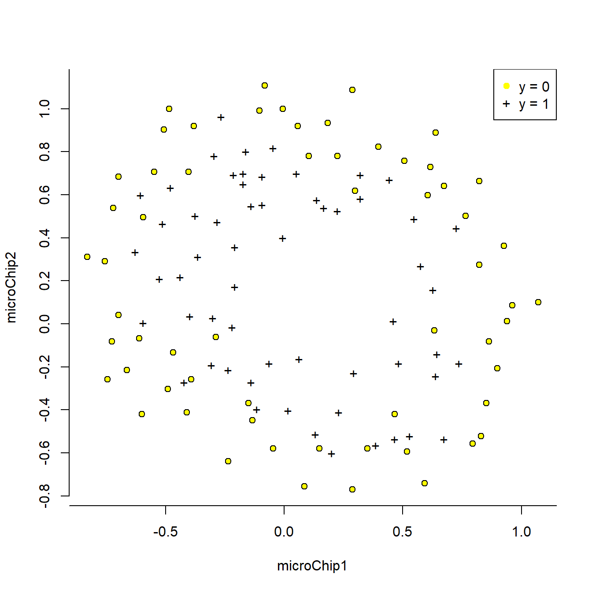
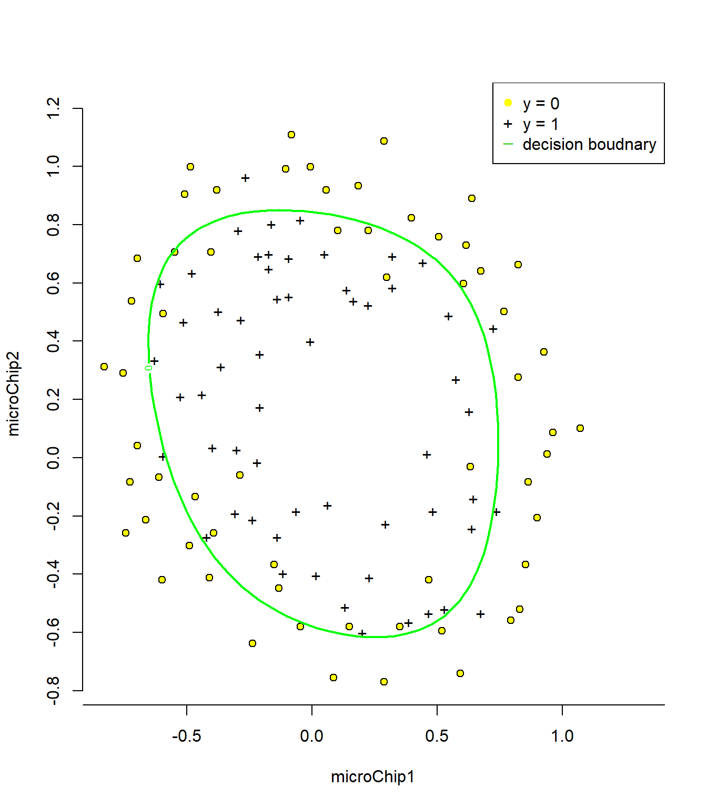

9 2 Regularized logistic regression
In this part of the exercise, you will implement regularized logistic regression to predict whether microchips from a fabrication plant passes quality assurance (QA). During QA, each microchip goes through various tests to ensure it is functioning correctly.
Suppose you are the product manager of the factory and you have the test results for some microchips on two different tests. From these two tests, you would like to determine whether the microchips should be accepted or rejected. To help you make the decision, you have a dataset of test results on past microchips, from which you can build a logistic regression model.
library(readr)
ex2data2 <- read_csv("ex2data2.txt",
col_names = c("microChip1", "microChip2", "qualityAssurance"),
col_types = cols(`1` = col_factor(levels = c("0",
"1"))))
X <- as.matrix(ex2data2[,1:2])
y <- as.numeric(as.matrix(ex2data2[,3]))
X <- cbind(ones = rep(1,dim(X)[1]), X)
m <- dim(X)[1]
n <- dim(X)[2]9.1 2.1 Visualizing the data
Similar to the previous parts of this exercise, plotData is used to generate a figure like Figure 3, where the axes are the two test scores, and the positive (y = 1, accepted) and negative (y = 0, rejected) examples are shown with different markers.
#par(mar=c(4.1, 5.1, 1.1, 5.1), xpd=TRUE)
# Plot both groups
pch.list <- rep(0, 2)
pch.list[ex2data2$qualityAssurance == 0] <- 21
pch.list[ex2data2$qualityAssurance == 1] <- 43
plot(microChip2 ~ microChip1, ex2data2, ylim=range(c(X[,3], X[,3])), xlim=range(c(X[,2], X[,2])),
col = c(1,1), pch = c(pch.list),bg= "yellow", axes = FALSE)
# set axis
axis(side=1, at=seq(-1, 1.5, by = 0.5 ))
axis(side=2, at=seq(-0.8, 1.2, by=0.2))
# Add legend to top right, outside plot region
legend("topright", inset=c(0,0), legend=c("y = 0","y = 1"), col = c("yellow",1), pch=c(19, 43))
The figure above shows that our dataset cannot be separated into positive and negative examples by a straight-line through the plot. Therefore, a straightforward application of logistic regression will not perform well on this dataset since logistic regression will only be able to find a linear decision boundary.
9.2 2.2 Feature mapping
One way to fit the data better is to create more features from each data point. In the provided function mapFeature.m, we will map the features into all polynomial terms of x1 and x2 up to the sixth power.
\(\begin{bmatrix} 1 \newline x_1 \newline x_2 \newline x_1^{2} \newline x_1 x_2 \newline x_2^{2} \newline x_1^{3} \newline . \newline . \newline . \newline x_1 x_2^{5} \newline x_2^{6} \end{bmatrix}\)
As a result of this mapping, our vector of two features (the scores on two QA tests) has been transformed into a 28-dimensional vector. A logistic regression classifier trained on this higher-dimension feature vector will have a more complex decision boundary and will appear nonlinear when drawn in our 2-dimensional plot.
While the feature mapping allows us to build a more expressive classifier, it also more susceptible to overfitting. In the next parts of the exercise, you will implement regularized logistic regression to fit the data and also see for yourself how regularization can help combat the overfitting problem.
# MAPFEATURE Feature mapping function to polynomial features - dope
#
# MAPFEATURE(X1, X2) maps the two input features
# to quadratic features used in the regularization exercise.
#
# Returns a new feature array with more features, comprising of
# X1, X2, X1.^2, X2.^2, X1*X2, X1*X2.^2, etc..
#
# Inputs X1, X2 must be the same size
mapFeature <- function(X1, X2){
degree <- 6
out <- as.matrix(rep(1, length(X1)))
for (i in 1:degree) {
for (j in 0:i) {
#browser() - was used to debug your function
out <- cbind(out, (X1^(i-j))*(X2^j))
}
}
return(out)
}
# This is very very close to the octave file but not exact. Come back to it if you have different thetas.
X <- mapFeature(X[,2], X[,3])The map feature does what is shown in the following figure.

9.3 2.3 Cost function and gradient
Now you will implement code to compute the cost function and gradient for regularized logistic regression. Complete the code in costFunctionReg.m to return the cost and gradient.
Recall that the regularized cost function in logistic regression is
\(J(\theta) = - \frac{1}{m} \sum_{i=1}^m \large[ y^{(i)}\ \log (h_\theta (x^{(i)})) + (1 - y^{(i)})\ \log (1 - h_\theta(x^{(i)}))\large] + \frac{\lambda}{2m}\sum_{j=1}^n \theta_j^2\)
Note that you should not regularize the parameter \(\theta_0\). In Octave/MATLAB, recall that indexing starts from 1, hence, you should not be regularizing the theta(1) parameter (which corresponds to \(\theta_0\)) in the code. The gradient of the cost function is a vector where the \(j^{th}\) element is defined as follows:
\[\begin{align} & \text{Repeat}\ \lbrace \newline & \ \ \ \ \theta_0 := \theta_0 - \alpha\ \frac{1}{m}\ \sum_{i=1}^m (h_\theta(x^{(i)}) - y^{(i)})x_0^{(i)} \newline & \ \ \ \ \theta_j := \theta_j - \alpha\ \left[ \left( \frac{1}{m}\ \sum_{i=1}^m (h_\theta(x^{(i)}) - y^{(i)})x_j^{(i)} \right) + \frac{\lambda}{m}\theta_j \right] &\ \ \ \ \ \ \ \ \ \ j \in \lbrace 1,2...n\rbrace\newline & \rbrace \end{align}\]
# Regularized cost and gradient
m <- dim(X)[1]
n <- dim(X)[2]
# 5. Set initial theta's
initialTheta <- matrix(rep(0, n), n, 1)
# 6. Make the cost function
# - Input (Initial theta, X, y, lambda)
# - Output (Cost and gradient)
# Important to regularize the first parameter both in the grad and the cost.
# Main trick done here is to replace the sum function with a vector multiplication
# by creating a row vector of 1. Then to not regularize the first theta replace it with 0
# and take theta values starting from the second to the end.
costFunctionReg <- function(theta, X, y, lambda){
cost <- 1/m * ((t(-y)%*%log(sigmoid(X%*%theta))-
t((1-y))%*%log(1- sigmoid(X%*%theta)))) +
( (lambda/(2*m)) * (rep(1, length(theta)) %*% (c(0, theta[2:length(theta)]))^2))
grad <- 1/m * (t(sigmoid(X %*% theta) - y)%*%X) + ((lambda/m)*(c(0, theta[2:length(theta)])))
return(list(cost = cost, grad = grad))
}
# Expected gradients with initial theta - actually from octave for accuracy (0.008475, 0.018788, 0.000078, 0.050345, 0.011501) - Expected cost - 0.693147
costFunctionReg(initialTheta, X, y, 1)## $cost
## [,1]
## [1,] 0.6931472
##
## $grad
## [,1] [,2] [,3] [,4] [,5] [,6]
## [1,] 0.008474576 0.01878809 7.777119e-05 0.05034464 0.01150133 0.03766485
## [,7] [,8] [,9] [,10] [,11] [,12]
## [1,] 0.01835599 0.007323934 0.008192445 0.02347649 0.03934862 0.002239239
## [,13] [,14] [,15] [,16] [,17] [,18]
## [1,] 0.01286005 0.003095937 0.03930282 0.01997075 0.004329832 0.003386439
## [,19] [,20] [,21] [,22] [,23] [,24]
## [1,] 0.005838221 0.004476291 0.03100798 0.03103124 0.001097402 0.006315708
## [,25] [,26] [,27] [,28]
## [1,] 0.000408503 0.007265043 0.001376462 0.03879364testTheta <- matrix(rep(1, n), n, 1)
# expected cost - 3.164509 & expected thetas for the first 5 gradients (0.346045, 0.161352, 0.194796, 0.226863, 0.092186)
costFunctionReg(testTheta, X, y, 10)## $cost
## [,1]
## [1,] 3.164509
##
## $grad
## [,1] [,2] [,3] [,4] [,5] [,6] [,7]
## [1,] 0.3460451 0.1613519 0.1947958 0.2268628 0.09218568 0.2443856 0.1433921
## [,8] [,9] [,10] [,11] [,12] [,13] [,14]
## [1,] 0.1084417 0.1023144 0.1834685 0.17353 0.08725552 0.1182278 0.0858433
## [,15] [,16] [,17] [,18] [,19] [,20] [,21]
## [1,] 0.1999489 0.1352265 0.09497527 0.09356441 0.09979784 0.09140157 0.1748524
## [,22] [,23] [,24] [,25] [,26] [,27] [,28]
## [1,] 0.1495544 0.08678566 0.09897686 0.08531951 0.1019067 0.08450198 0.18228329.4 2.4 Learning parameters using fminunc
Similar to the previous parts, you will use fminunc to learn the optimal parameters θ. If you have completed the cost and gradient for regularized logistic regression (costFunctionReg.m) correctly, you should be able to step through the next part of ex2 reg.m to learn the parameters θ using fminunc.
Correction: objective and grad function that is passed to the fminunc call can take more than one variable. However, the variable to be optimized should be the first argument and specific value for the other variables should be passed to the advanced minimization algorithm after the objective and the gradient functions.
There is also a small difference in the gradients the reason for which I did not understand at the moment.
costReg <- function(theta, X, y, lambda){
1/m * ((t(-y)%*%log(sigmoid(X%*%theta))-
t((1-y))%*%log(1- sigmoid(X%*%theta)))) +
( (lambda/(2*m)) * (rep(1, length(theta)) %*% (c(0, theta[2:length(theta)]))^2))
}
gradReg <- function(theta, X, y, lambda){
1/m * (t(sigmoid(X %*% theta) - y)%*%X) + ((lambda/m)*(c(0, theta[2:length(theta)])))
}
# Expected cost - J = 0.52900 and first 5 gradients (1.273005, 0.624876, 1.177376, -2.020142, -0.912616)
regOptim <- ucminf::ucminf(par = initialTheta, fn = costReg, gr = gradReg, X = X, y =y, lambda = 1, control = list(trace = 0, maxeval= 400))
regOptim[c(2,1)]## $value
## [1] 0.5290027
##
## $par
## [1] 1.27273642 0.62521798 1.18107445 -2.01998642 -0.91741042 -1.43161497
## [7] 0.12409395 -0.36549642 -0.35723318 -0.17514450 -1.45818376 -0.05097913
## [13] -0.61562760 -0.27471004 -1.19279589 -0.24211333 -0.20596939 -0.04474605
## [19] -0.27780142 -0.29536995 -0.45637850 -1.04321107 0.02778775 -0.29246052
## [25] 0.01555863 -0.32740993 -0.14389754 -0.924652539.5 2.5 Plotting the decision boundary
To help you visualize the model learned by this classifier, we have provided the function plotDecisionBoundary.m which plots the (non-linear) decision boundary that separates the positive and negative examples. In plotDecisionBoundary.m, we plot the non-linear decision boundary by computing the classifier’s predictions on an evenly spaced grid and then and drew a contour plot of where the predictions change from y = 0 to y = 1.
After learning the parameters θ, the next step in ex reg.m will plot a decision boundary similar to Figure 4.
# # Plot both groups - X should include intercept
plotDecisionBoundary <- function(X, y, lambda=NULL, initialTheta){
if (dim(X)[2]<= 3) {
finalTheta <- ucminf::ucminf(par = initialTheta, fn = costReg, gr = gradReg, X = X, y =y, lambda = lambda, control = list(trace = 0, maxeval= 400))$par
pch.list <- rep(0, 2)
pch.list[ex2data1$admission == 0] <- 21
pch.list[ex2data1$admission == 1] <- 43
plot(examScore2 ~ examScore1, ex2data1, ylim=range(c(30, 100)), xlim=range(c(30, 100)),
col = c(1,1), pch = c(pch.list), bg = "yellow")
# Add legend to top right, outside plot region
legend("topright", inset=c(0,-0.0375), legend=c("Not admitted","Admitted", "Decision Boundary"), col = c("yellow",1,3), pch=c(19, 43, 95))
abline(a = -finalTheta[1]/finalTheta[3], b = -finalTheta[2]/finalTheta[3], col = "green")
} else {
regOptim <- ucminf::ucminf(par = initialTheta, fn = costReg, gr = gradReg, X = X, y =y, lambda = lambda, control = list(trace = 0, maxeval= 400))
u <- seq(-1, 1.5, length = 50)
v <- seq(-1, 1.5, length = 50)
z <- matrix(0,length(u), length(v))
for (i in 1:length(u)) {
for (j in 1:length(v)) {
z[i,j] <- mapFeature(u[i],v[j])%*%regOptim$par
}
}
pch.list <- rep(0, 2)
pch.list[ex2data2$qualityAssurance == 0] <- 21
pch.list[ex2data2$qualityAssurance == 1] <- 43
plot(microChip2 ~ microChip1, ex2data2, ylim=range(c(X[,3], X[,3]+0.1)), xlim=range(c(X[,2], X[,2]+0.25)),
col = c(1,1), pch = c(pch.list),bg= "yellow", axes = FALSE)
axis(side=1, at=seq(-1, 1.5, by = 0.5 ))
axis(side=2, at=seq(-0.8, 1.2, by=0.2))
legend("topright", inset=c(0,0), legend=c("y = 0","y = 1", "decision boudnary"), col = c("yellow", 1, 3), pch=c(19, 43, 95))
contour(x = u, y = v, z = z, c(0,0),lwd = 2, add = TRUE, col = "green")
}
}
# This would be the previous plot --- reason why you should develop more general functions
# plotDecisionBoundary(X = cbind(ones = rep(1,dim(ex2data1)[1]),as.matrix(ex2data1[,1:2])), y = as.numeric(as.matrix(ex2data1[,3])), initialTheta = matrix(rep(0, 3), 3, 1), lambda = 0)
plotDecisionBoundary(X = X, y = y, lambda = 1, initialTheta = initialTheta)
9.6 2.4 Varying lambda levels
In this part of the exercise, you will get to try out different regularization parameters for the dataset to understand how regularization prevents overfitting.
Notice the changes in the decision boundary as you vary λ. With a small λ, you should find that the classifier gets almost every training example correct, but draws a very complicated boundary, thus overfitting the data (Figure 5). This is not a good decision boundary: for example, it predicts that a point at x = (−0.25, 1.5) is accepted (y = 1), which seems to be an incorrect decision given the training set.
With a larger λ, you should see a plot that shows an simpler decision boundary which still separates the positives and negatives fairly well. However, if λ is set to too high a value, you will not get a good fit and the decision boundary will not follow the data so well, thus underfitting the data (Figure 6).
# The height setting was a bit annoying. So you have to set the plotOut height as auto and then create a function inside render plot to set it to a value you want.
renderPlot({
plotOutput(plotDecisionBoundary(X = X, y = y, lambda = input$lambda, initialTheta = initialTheta), height = "auto")
}, height = function() {
600
})